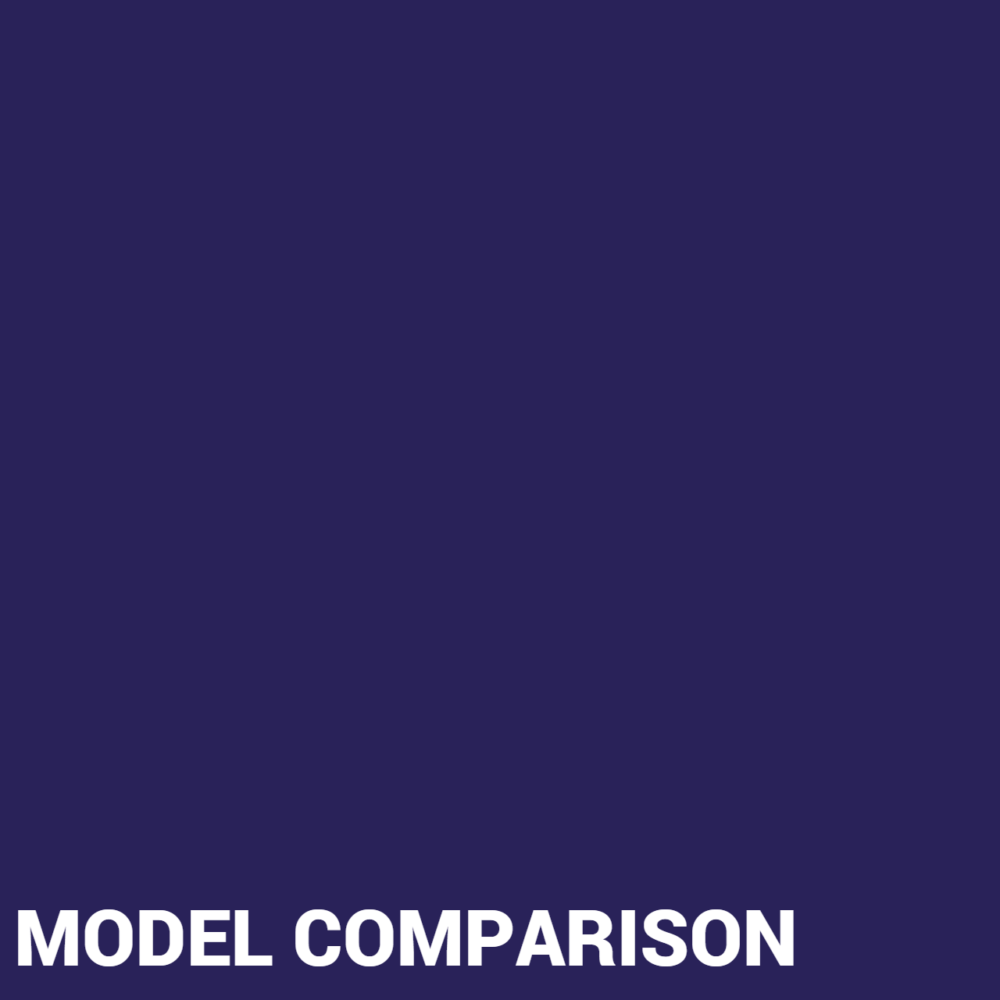

When fitting a logistic regression model to our data, we got a training score of 0.96 and a test score of 0.94.
These scores are both high, so there was no need to worry about over or under-fitting - raising our confidence that
our accuracy of 0.92 is a good indicator of this model's performance.
Looking at the classification report - overall, the logistic model performs quite well.
Do note that recall for class 1 (normal weight) seems to be lower than the rest; this is a trait
that seems to be shared across all our classification models. This indicates that our models are better at
predicting the other weight classes as opposed to normal weight. Perhaps the data set is imbalanced in that regard.
The weighted average precision, recall, and f1-score are all quite high at 0.92 - showing that this model is quite
reliable at predicting the level of obesity using the given data.

{kind=link}
![When using KNN there are two general practices to keep in mind. Since the value of K is non-parametric the formula k = sqrt(N)/2 where n is the number of samples in the training dataset. To prevent ties if you have an even number of classes it’s a good idea to use an odd K value but, if the number of classes are odd then an even K value is recommended. K = sqrt(0.75*2111)/2 K = 19.89504 With 16 classes the number should be odd. The k value from the previous formula is 19. Lower k values tend to be more accurate but also have a tendency to overfit. Higher k values have a lower testing accuracy score. Finding the balance between the two is very important for KNN.](../static/content/img/KNN/knn_selection.PNG){kind=link}
{kind=link}
{kind=link}
![When fitting a logistic regression model to our data, we got a training score of 0.96 and a test score of 0.94. These scores are both high, so there was no need to worry about over or under-fitting - raising our confidence that our accuracy of 0.92 is a good indicator of this model's performance. Looking at the classification report - overall, the logistic model performs quite well. Do note that recall for class 1 (normal weight) seems to be lower than the rest; this is a trait that seems to be shared across all our classification models. This indicates that our models are better at predicting the other weight classes as opposed to normal weight. Perhaps the data set is imbalanced in that regard. The weighted average precision, recall, and f1-score are all quite high at 0.92 - showing that this model is quite reliable at predicting the level of obesity using the given data.](../static/content/img/Logistic/test-classification.jpg){kind=link}
![We attempted to fit two models since we were of differing opinions of whether or not all the features would be impactful. We used two linear models in our approach: Ridge and Lasso models, where Ridge is more suited to data where there are many impactful features and Lasso is more suited to data where few features should be impactful. Looking at residual plots as well as the mean squared error and r2 values for our two models shows that neither of them are great fits. We arrive at the conclusion that perhaps our data is not suited for regression, and (maybe) more numerical data involving health (like blood pressure) would be needed.](../static/content/img/residuals.jpg){kind=link}
{kind=link}
{kind=link}
{kind=link}
![ We compared all the classification reports from KNN, Logistic, & RBF models. Our conclusion is that the RBF model is the most accurate for our dataset. RBF has the highest accuracy out of the three models (96%). Accuracy is a great metric to go off of but we still wanted to take a look at the recall % for each obesity level. As you can see all three of the ML models had the hardest time predicting the correct obesity level for 1 (normal weight). RBF had the best recall ratio (88%), this allowed us to confirm this is the best model to use.](../static/content/img/model_comparison.jpg){kind=link}